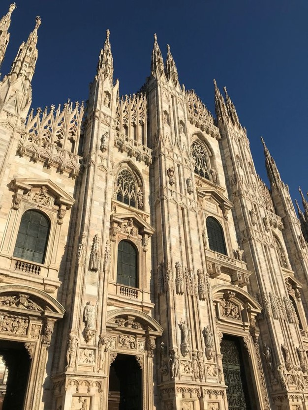

Строительство собора припало на вторую половину 14-го века по распоряжению герцога Джангалеаццо Висконти. Смена эпох привнесла в первоначальный проект элементы ренессанса.
Для отделки использовался белый мрамор с розоватым оттенком из карьера Кандолья. Возвели Дуомо в стиле Пламенеющей готики. Внешнее убранство святыни поражает своей помпезностью. Для украшения фасада было использовано 3400 статуй и несколько тысяч лепного декора.
Как и во всех других готических соборах, скульптуры Милано Дуомо посвящены идее христианского спасения. Они изображают исторических и библейских персонажей — патриархов и пророков, мучеников и святых, а также херувимов, гаргулий и химер. Многие скульптуры, особенно наиболее значимые, были перенесены после войны в Музей Дуомо, где они сохраняются и по сей день как образцы художественного наследия. Миланский собор украшают 45 витражных панно, самому древнему из которых более 500 лет.